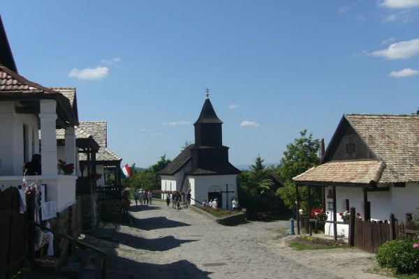
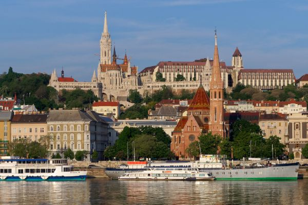
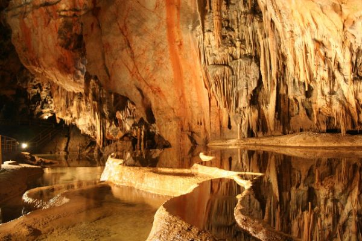
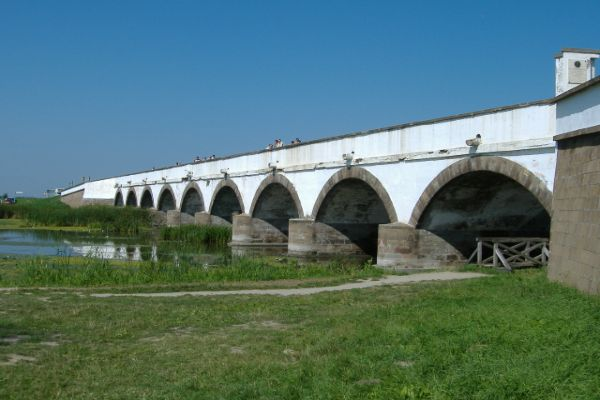
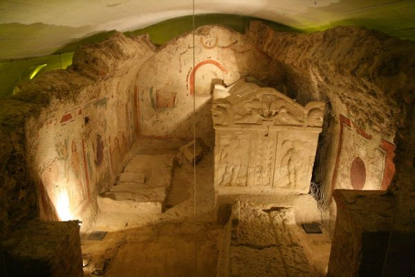
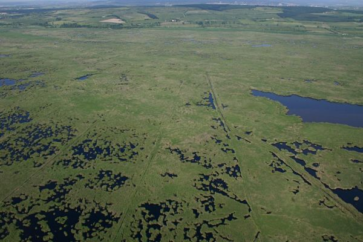
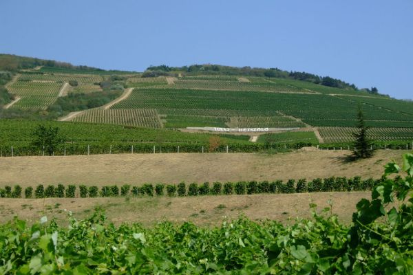

A UNESCO Világörökség Programjáról
A UNESCO (azaz Egyesült Nemzetek Szervezetének Nevelésügyi, Tudományos és Kulturális Szervezete) Világörökség Programját 1972-ben alapították. A program célja, hogy az emberiség kulturális és természeti örökségét nyilvántartásba vegye – így az országoknak, amelyek erre a listára kerülnek, vállalniuk kell, hogy megóvják a területükön lévő világörökségi helyszíneket, hogy aztán a későbbi generációk is élvezhessék azok páratlan szépségét. Mondanunk sem kell, hogy a világörökségi listára rákerülni hatalmas presztízsértékkel bír – olyan helyek szerepelnek itt, mint például a Grand Canyon Nemzeti Park, Firenze történelmi központja, a Machu Picchu vagy a kínai nagy fal. Ennek a magasztos felsorolásnak a része immár nyolc természeti és kulturális érték Magyarországon is; a FŐVÁROSBAN a DUNA-PART LÁTKÉPE a BUDAI VÁRNEGYEDDEL és az Andrássy úttal számít a Világörökség részének.
Világörökségeink

Hóllókő

Budapest

Az Aggteleki- és Szlovák-karszt barlangjai

Pannonhalmi Bencés Főapátság

Hortobágyi Nemzeti Park

Pécsi ókeresztény sírkamrák

Fertő-táj

Tokaji borvidék
Elhelyezkedésük
Várólistán szereplő helyszínek
A Világörökség Magyar Nemzeti Bizottsága dönt arról, hogy a hozzá beérkezett javaslatok alapján mely helyszíneket tartja esélyesnek és érdemesnek egy valamikori felvételre a világörökségi listára. A következő helyszínek szerepelnek az úgynevezett Magyar Várományosi Listán:
- A Budai termál karsztrendszer barlangjai
- Esztergom középkori erődítménye
- A Középkori királyi székhely és díszudvar Visegrádon
- Mezőhegyesi Állami Ménesbirtok (Kulturális – kultúrtáj)
- Erődrendszer a Duna és a Vág összefolyásánál Komárom-Komárno-ban (Kulturális)
- Az ipolytarnóci ősélőhely (Természeti) – 2003-ban felterjesztve, felvételéről a döntés egyelőre elhalasztva (eredeti név: Ipolytarnóc – ősmaradványok)
- Tájházhálózat Magyarországon (Kulturális) – később átsorolhatják a „Szellemi örökség” (intangible heritage) Egyezmény körébe
- A Tihanyi-félsziget, a Tapolcai-medence tanúhegyei és a Hévízi-tó – a helyszín lehatárolása és kategóriája 2003-tól megváltozott, mivel két, közeli helyszínt csatoltak hozzá sorozatnevezésként
- Az északkeleti Kárpát-medence fatemplomai (Kulturális) szlovák-magyar
- A „Dunakanyar-kultúrtáj” (munkacím) (Kulturális – kultúrtáj) – a Visegrádi középkori királyi központ és vadászterület, illetve Esztergom középkori vára korábbi két várományosi helyszín összevonásával
- A római limes magyarországi szakaszai (Kulturális) – nemzetközi sorozatjelölés részeként
Források